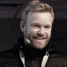

Startup & Startup Breakfast
What: Conference, VC's, Startups, Finance, Business, Lightningtalks
Date: June 18th - June 19th
Time: 8 AM - 11 PM
Entrance: 25 EUR per participant ticket / 50 EUR visitor ticket
What is it about
Startups, techies, investors and entrepreneurs will meet in a creative atmosphere to
discuss hot topics and network with other technology industry professionals who share
similar passions, and social interests. Therefore we offer different formats.
The following program items are offered:
 Carl-o-Matic
Carl-o-Matic
Carlo Matic (formerly known as Carlo Blatz) is since 1995 an experienced manager and entrepreneur with more than 70 employees. He founded the digital agency Interactive Pioneers (formerly known as Powerflasher), is cofounder and CTO of Supreme NewMedia (supr.com) and supports as business angel different startups. As a passionate networker he has excellent contacts in online businesses, is a proud referrer of HackFWD and speaks frequently at international conferences. The serial book author, has grown his expertise, in addition to his technical insights, to the fields of eCommerce, user experience and online marketing. The perfect man to explain to you Why Geeks Are Better Founders
Sebastian Deutsch
Sebastian Deutsch is one of the founders of 9elements. He started hacking at a young age on a Commodore Amiga computer. From then on he developed software on various platforms - but he loves the web the most. He enjoys programming Ruby on Rails and loves to create new interfaces using technologies like HTML5 and JavaScript. Sebastian has a university degree in Computer Science from the Technische Universität Dortmund. When he is not hacking he loves to ski in the alps. His talk: KPIs for Nerds - All about KPIs you ever wanted to know (but was always afraid to ask).
Karl-Heinz Land
Senior Vice President & Chief Evangelist Social iCommerce, MicroStrategy.
Marc Sieberger
Founder & COO/CFO Doo talking about "Big Ideas Big Disruption".
We would like to invite you to StartUp Breakfast in Cologne. Enjoy a tasty croissant and a hot coffee in a laid-back atmosphere before you start a successful rest of the week. Connect and chat with interesting faces from Cologne's emerging StartUp scene. We are looking forward to meet you there.
Short talks by the attendees. Only a limited number of open slots, free choice of subject. Time is limited to five minutes.
Short talks and best practices by selected startups and entrepreneurs. Meet & greet with self-made entrepreneurs in an intimate atmosphere afterwards.
Discussions and presentations of innovative and successful business ideas and models,
comparison with the hack tracks of the event. Connecting of the hack tracks „Copter“,
„Anykey“ and „3D-Print“ with the business models. Question: What kind business idea
can be successful in NRW/Germany?
- Evaluation and development of business models in pre-seed
Discussions and presentations about advantages and disadvantages as well as risks of
various forms of financing. Where lies the future of financing? Why Exits? Bootstrapping
vs. Investors vs. public funds. Alternative forms of financing like cooperations or crowd
funding. How to minimize risks and what are low-risk business models?
- Finding CTO’s and other technical talent – avoiding the most common misconceptions
- Why hackers are the better founders.
- There’s no ‘I’ in ‘Team’ - Every startup / founder depends on Biz AND Tech
- Who needs (German) hackers anyway?! The case for offshore development.
You want to pitch? No problem - send us an application (video is a must!)
- StartUps search CTOs and present their projects / Business Models - details will follow soon